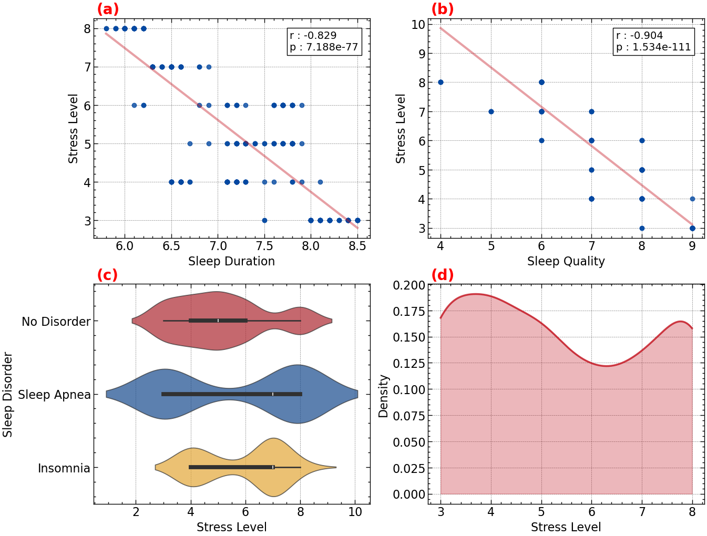
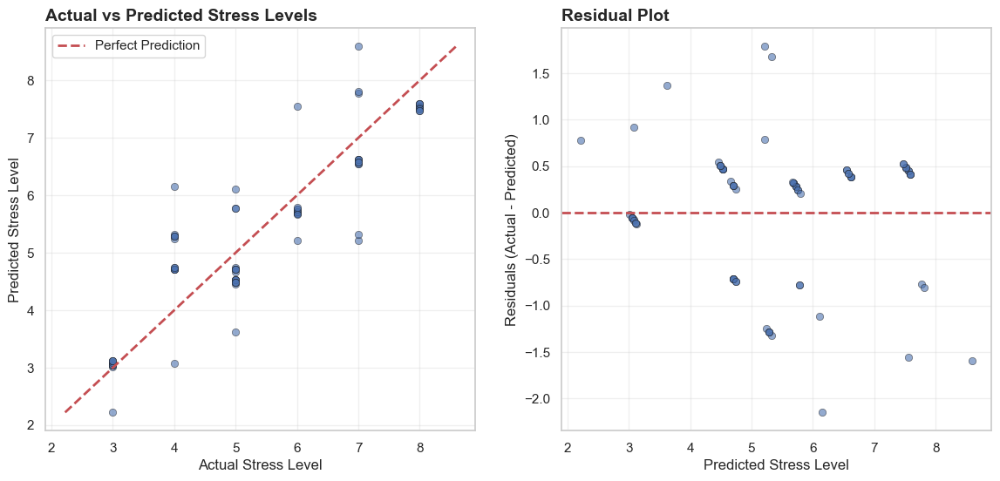

| person_id | sleep_duration | sleep_quality | sleep_disorder | stress_level | |
|---|---|---|---|---|---|
| 0 | 282 | 6.1 | 6 | Sleep Apnea | 8 |
| 1 | 150 | 8.0 | 9 | NaN | 3 |
| 2 | 219 | 7.8 | 8 | Sleep Apnea | 5 |
| 3 | 268 | 6.2 | 6 | NaN | 8 |
| 4 | 153 | 7.2 | 8 | NaN | 5 |
| 5 | 113 | 7.2 | 8 | NaN | 4 |
| 6 | 271 | 6.1 | 6 | Sleep Apnea | 8 |
Understanding Stress Through Sleep Patterns
1. Summary
Stress has become a critical public health concern, yet its relationship with daily habits remains complex to quantify. In this project, we explore how an individual’s sleep wellness relates to their reported stress level using the Sleep Health and Lifestyle Dataset. Our goal is to investigate whether sleep patterns can help explain or predict how stressed a person feels. To do this, we perform exploratory data analysis to understand trends in the data and build a predictive model to evaluate how well sleep duration and related lifestyle variables can estimate a person’s stress level. Our analysis reveals a significant inverse relationship between sleep metrics and stress. Specifically, our model achieved an \(R^2\) score of \(0.51\), corroborating that shorter sleep duration and lower quality are associated with higher self-reported stress. However, residual analysis suggests non-linear relationships that a linear model may not fully capture. These findings highlight the potential of using simple lifestyle metrics for stress assessment, while also indicating the need for more complex modeling techniques to account for the nuanced nature of sleep health.
2. Introduction
Stress is a major public health concern, there are surveys consistently report that more than 1/3 of adults experience high stress on a regular basis (Sleep Foundation 2025). Chronic stress has been linked to anxiety, cardiovascular disease, weakened immunity, and reduced productivity. At the same time, insufficient sleep is extremely common—recent population studies suggest that about \(30 \%\) of adults sleep fewer than the recommended 7 hours per night (Centers for Disease Control and Prevention 2024). Because sleep plays a crucial role in emotional regulation, cognitive performance, and physical recovery, disruptions in sleep duration are believed to contribute directly to increased stress levels.
In this project, we ask whether information about a person’s sleep duration and daily lifestyle habits can help explain or predict their self-reported stress level. This question is important because stress assessments typically rely on subjective questionnaires or clinical evaluations, which can vary among individuals and are difficult to scale. If simple, easy-to-measure variables—such as how long someone sleeps or how active they are during the day—can provide meaningful insight into stress, this could support early identification of at-risk individuals and inform recommendations for healthier sleep and lifestyle patterns.
To explore this question, we analyze the Sleep Health and Lifestyle Dataset (Varishabatool n.d.), which contains information on individuals’ sleep duration, sleep quality, physical activity, demographic attributes, and self-reported stress. This dataset allows us to examine behavioral patterns related to sleep, identify lifestyle factors that correlate with stress, and evaluate whether a predictive model can estimate stress levels using accessible and non-clinical lifestyle data.
3. Methods
3.1. Data Loading and Preprocessing
The Sleep Health and Lifestyle Dataset is publicly released on Kaggle under CC0 license. We use one of its GitHub mirror (Husn 2023) in our analysis to avoid Kaggle authentication.
The dataset has \(374\) records and \(12\) features. In our analysis, we evaluate the relationships between stress level and three features about sleep wellness. The first feature is Sleep Duration, a numerical/continuous variable representing hours of sleep per night. The second is Quality of Sleep, a numerical/ordinal measure of self-reported quality of sleep. The third is Sleep Disorder, a categorical variable indicating diagnosed sleep disorder (None, Insomnia, or Sleep Apnea). The target column Stress Level is the level of stress assessed through interviews or questionnaires. The values range from \(3\) (minimum) to \(8\) (maximum). Our model will predict the stress level as numeric scores through the input features.
To prepare the data for analysis, we first drop the unused columns.
The NaN values in the Sleep Disorder column means the individual has not been diagnosed with a sleep disorder. We replace the NaN values with a string value No Disorder.
| person_id | sleep_duration | sleep_quality | sleep_disorder | stress_level | |
|---|---|---|---|---|---|
| 0 | 46 | 7.8 | 7 | No Disorder | 6 |
| 1 | 118 | 7.2 | 8 | No Disorder | 4 |
| 2 | 88 | 7.2 | 8 | No Disorder | 4 |
| 3 | 300 | 8.5 | 9 | No Disorder | 3 |
| 4 | 346 | 8.2 | 9 | Sleep Apnea | 3 |
| 5 | 95 | 7.2 | 8 | Insomnia | 4 |
| 6 | 175 | 7.6 | 8 | No Disorder | 5 |
3.2. Data Spltting
The data is splitinto train (\(80\%\)) and test (\(20\%\)) sets. The train set contains 299 records.
| sleep_duration | sleep_quality | sleep_disorder | stress_level | |
|---|---|---|---|---|
| count | 299.000000 | 299.000000 | 299 | 299.000000 |
| unique | NaN | NaN | 3 | NaN |
| top | NaN | NaN | No Disorder | NaN |
| freq | NaN | NaN | 176 | NaN |
| mean | 7.123411 | 7.324415 | NaN | 5.377926 |
| std | 0.802421 | 1.217231 | NaN | 1.813719 |
| min | 5.800000 | 4.000000 | NaN | 3.000000 |
| 25% | 6.400000 | 6.000000 | NaN | 4.000000 |
| 50% | 7.200000 | 7.000000 | NaN | 5.000000 |
| 75% | 7.800000 | 8.000000 | NaN | 7.000000 |
| max | 8.500000 | 9.000000 | NaN | 8.000000 |
Table 3 shows the descriptive statistics of our processed dataset
4. Results
4.1. Data Validation
Before we proceed with the data, we perform a quality checks on the input data ensuring the quality of the data is to the standard.
We also perform a quality check on the test data to ensure it meets the expected format and minimum quality thresholds. This validation uses a predefined schema and does not involve any data exploration or transformations that would violate the golden rule.
After the quality checks are done, we will now drop the Person ID column. The final input data looks like Table 4.
| sleep_duration | sleep_quality | sleep_disorder | stress_level | |
|---|---|---|---|---|
| person_id | ||||
| 63 | 6.2 | 6 | No Disorder | 8 |
| 139 | 7.1 | 8 | No Disorder | 4 |
| 74 | 6.1 | 6 | No Disorder | 8 |
| 60 | 7.7 | 7 | No Disorder | 6 |
| 275 | 6.2 | 6 | Sleep Apnea | 8 |
4.2. Exploratory Data Analysis (EDA)

There’s a strong negative correlation (\(r = -0.829\), \(p = 7.188e-77\)), indicating that longer sleep duration is significantly associated with lower stress levels. This relationship is highly statistically significant.
An even stronger negative correlation exists (\(r = -0.904\), \(p = 1.534e-111\)), suggesting that better sleep quality has a more pronounced relationship with reduced stress than sleep duration alone. The extremely low p-value confirms this is not due to chance.
The violin plots reveal that individuals with no sleep disorder cluster at higher stress levels (centered around 5-6), while those with sleep apnea and insomnia show broader distributions with generally elevated stress. Insomnia cases appear to have slightly higher median stress levels than sleep apnea.
The bimodal density plot suggests two distinct subpopulations in the dataset - one centered around stress level 4 and another around stress level 7-8. This could indicate fundamentally different groups, possibly corresponding to those with and without sleep-related issues.
The data strongly supports that both sleep quantity and quality are inversely related to stress, with sleep quality being the stronger predictor of stress levels. Given the clear linear trends observed in the data, implementing a linear regression model such as Ridge would be an optimal approach to quantify how well these sleep-related features can explain variations in stress levels.
4.3. Baseline Model
We separate the feature columns and the target column.
We train a DummyClassifier as our baseline model.
| fit_time | score_time | test_score | train_score | |
|---|---|---|---|---|
| 0 | 0.002306 | 0.001221 | 0.20000 | 0.200837 |
| 1 | 0.002207 | 0.001051 | 0.20000 | 0.200837 |
| 2 | 0.001785 | 0.001045 | 0.20000 | 0.200837 |
| 3 | 0.001412 | 0.001057 | 0.20000 | 0.200837 |
| 4 | 0.002269 | 0.000779 | 0.20339 | 0.200000 |
Table 5 shows a validation accuracy of around \(20%\). We therefore aim for a test score higher than that.
4.4. Column Transformation
We will perform standard scaling on Sleep Duration and one-hot encoding on Sleep Disorder. Quality of Sleep contains naturally ordered integers and therefore does not require transformation.
4.5. Training and Validation
| fit_time | score_time | test_neg_MSE | train_neg_MSE | test_r2 | train_r2 | |
|---|---|---|---|---|---|---|
| 0 | 0.015668 | 0.007463 | -0.966525 | -0.939745 | 0.735982 | 0.702552 |
| 1 | 0.012398 | 0.005666 | -1.115303 | -0.901239 | 0.600846 | 0.733666 |
| 2 | 0.007701 | 0.005230 | -0.941442 | -0.952310 | 0.693674 | 0.712694 |
| 3 | 0.007618 | 0.007678 | -0.769661 | -0.989587 | 0.789710 | 0.688111 |
| 4 | 0.009186 | 0.004799 | -1.068692 | -0.914836 | 0.641952 | 0.726779 |
The linear regression model demonstrated strong generalization with a mean cross-validated score of \(0.69\), closely matching the mean training score of \(0.71\). This indicates that the three selected features robustly explain approximately \(70%\) of the variance in the target variable with minimal overfitting.
4.6. Model Evaluation
The linear regression model explains approximately \(52 \%\) of the variance in stress levels (\(R^2 \approx 0.52\)). Given that stress levels range from \(3\) to \(8\) (range = \(5\)), the RMSE between \(1.2\) to \(1.3\) represents approximately \(25 \%\) of this range, indicating moderate prediction accuracy.
Finally, we visualize the prediction results.

Figure 2 shows moderate predictive performance with reasonable alignment along the diagonal line, though there’s notable scatter indicating imperfect predictions, particularly for mid-range stress levels (4-6). The residual plot shows a slight negative trend, suggesting the model tends to overpredict at lower stress levels and underpredict at higher stress levels, indicating potential non-linear relationships in the data.
5. Discussion
5.1. Summary of Findings
The analysis revealed strong negative correlations between sleep duration, sleep quality, and stress levels, with sleep quality being the most significant predictor. The linear regression model explained approximately \(52%\) of the variance in stress levels, indicating that these sleep-related features are meaningful but not exhaustive predictors of stress.
5.2. Expected vs Actual Outcomes
The findings aligned with our expectations that better sleep patterns would correlate with lower stress levels. However, the model’s moderate predictive accuracy suggests that while sleep is a crucial factor, other variables likely contribute significantly to stress. This highlights the complexity of stress as a multifaceted phenomenon influenced by various lifestyle, psychological, and environmental factors.
5.3. Assumptions and Limitations
To predict stress levels from our features, we employed Ridge regression, which implicitly assumes a linear relationship between the predictors and the target variable. This linearity assumption represents a key limitation, as real-world relationships between sleep parameters, lifestyle factors, and perceived stress are often non-linear (as suggested by some of our EDA scatter plots). Additionally, we did not incorporate polynomial or interaction terms, further restricting the model’s ability to capture more complex patterns. Another important limitation arises from the presence of outliers observed in the exploratory data analysis. Because mean squared error (MSE) is highly sensitive to outliers and is reported on a squared scale (making interpretation less intuitive), it may not have been the most robust evaluation metric. Similarly, \(R^2\) assumes linearity and can be misleading when the true relationship is non-linear.
5.4. Impact and Applications
Understanding the relationship between sleep and stress has important implications for public health. Interventions aimed at improving sleep quality and duration could be effective strategies for stress reduction. There is however a lingering question of which direction the causality goes—does poor sleep lead to higher stress, or does high stress lead to poor sleep? Future studies could explore this bidirectional relationship further.
5.5. Future Work
Future research could establish the correct direction of causality between sleep and stress through longitudinal or experimental studies. Additionally, incorporating more comprehensive lifestyle, psychological, and physiological variables (e.g., actigraphy data, cortisol measurements, or validated anxiety/depression scales) could substantially enhance the predictive power of stress-assessment models. Exploring non-linear modeling techniques (e.g., random forests, gradient boosting, or neural networks) and polynomial/interaction terms would better capture the complex relationships evident in the data. Finally, adopting more robust and interpretable evaluation metrics—such as mean absolute error (MAE), Huber loss, or median absolute error—would reduce the influence of outliers and provide clearer insights into model performance.
6. References
Centers for Disease Control and Prevention. 2024. “FastStats: Sleep in Adults.” https://www.cdc.gov/sleep/data-research/facts-stats/adults-sleep-facts-and-stats.html.
Husn, M. 2023. “Sleep Health and Lifestyle.” GitHub. https://raw.githubusercontent.com/Muhanad-husn/Sleep-Health-and-Lifestyle/main/data.csv.
Sleep Foundation. 2025. “100+ Sleep Statistics – Facts and Data about Sleep 2024.” https://www.sleepfoundation.org/how-sleep-works/sleep-facts-statistics.
Varishabatool. n.d. “Sleep Health and Lifestyle Dataset.” Kaggle. https://www.kaggle.com/datasets/varishabatool/disorder.